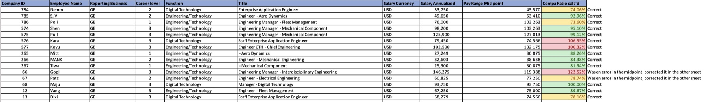
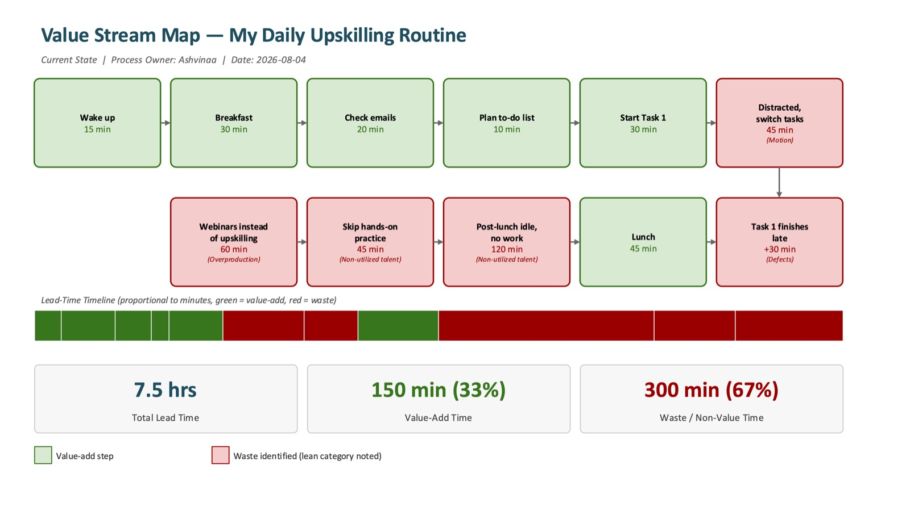
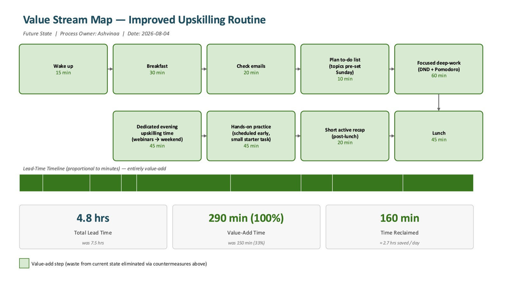

1. Is pay consistent?
The brief was to coach a leader on compensation. I had pay details for a group of employees and GE’s pay-range table covering about 900 employees. For each person I looked up the midpoint of their pay range by company ID and calculated their compa-ratio: salary as a percentage of that midpoint. A ratio near 100% means someone is paid in line with their range; well below or above it is a question worth asking.
Two results didn’t make sense. One employee came out at 403% of their midpoint and another at 142%. Rather than report them, I traced both back to errors in the midpoint data, corrected them, and the ratios settled at 123% and 79%. I then made recommendations to keep pay decisions consistent and fair across the group. I used generative AI (Claude) to speed up the checks and catch errors.

2. Finding waste with Lean
The task was to map a familiar routine with a value stream map, label the waste using Lean’s categories, and design a better version. I mapped my own daily upskilling routine.
Only a third of the 7.5 hours added value. The rest went on task-switching (motion), webinars instead of practice (overproduction) and idle time after lunch (non-utilised talent). My redesign used focused blocks, earlier hands-on practice and a short recap after lunch. It brought the routine down to 4.8 hours, all of it value-adding, which frees up 160 minutes a day.


3. Feedback that helps someone change
The scenario: a colleague holds out for the perfect solution before acting, which slows a team that has agreed to test and iterate quickly. Nobody has told him. I wrote the feedback using GE’s SOI model: the Standard the team agreed, the behaviour I Observed, and its Impact, closing on a positive, forward-looking note.
I started from what he does well, named the behaviour and its effect on the team without blame, and offered support. The aim was to leave him motivated to change rather than defensive.
What I took from it
The simulation confirmed how much I enjoy HR work. Each task needed both sides of my background: the numbers to check pay and measure a process, and the people skills to turn the findings into a conversation someone can act on.